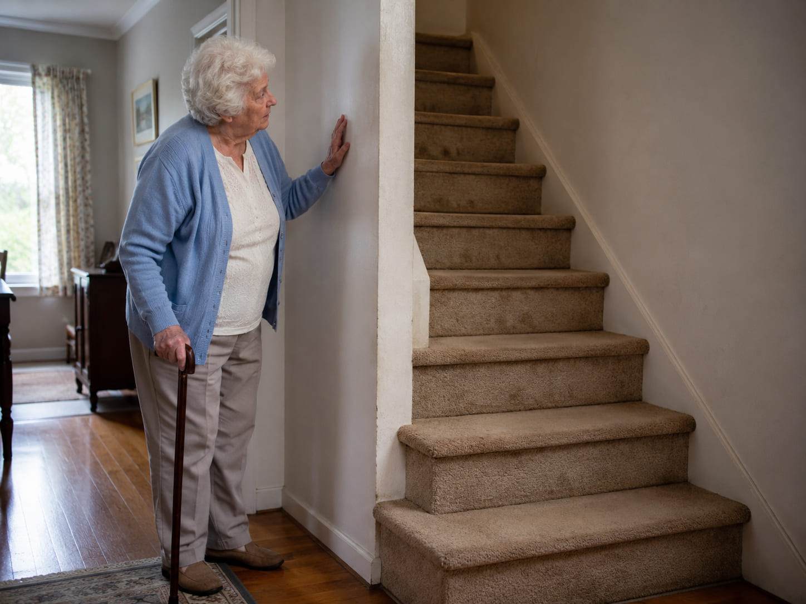
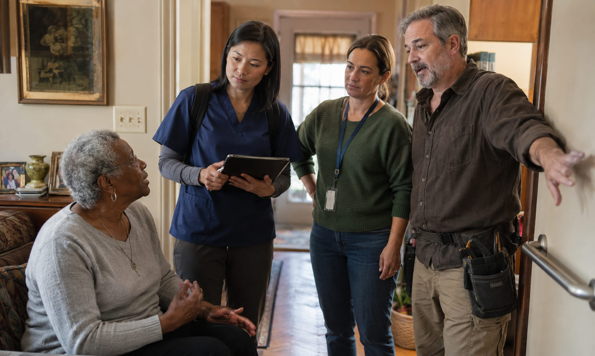
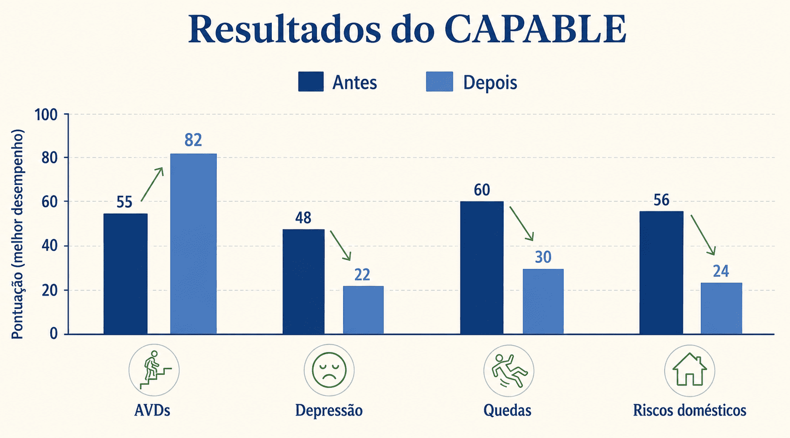
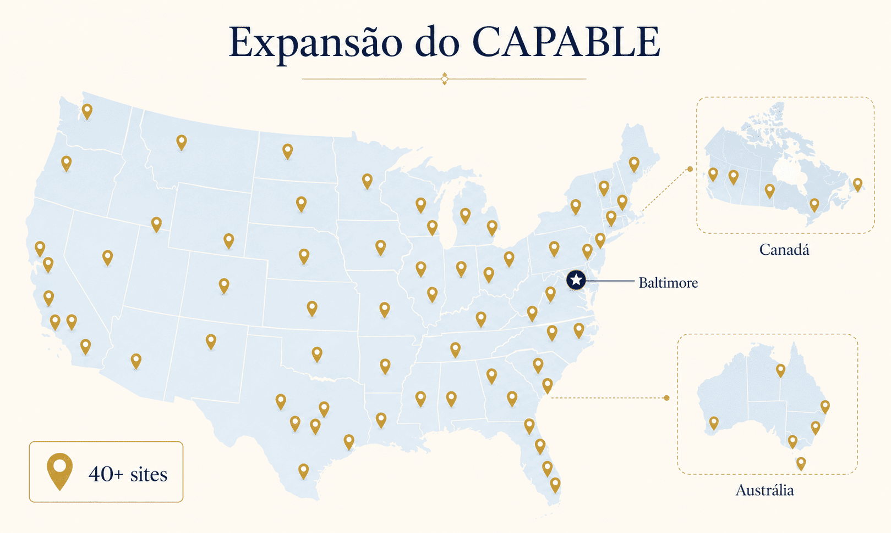

O Problema que ninguém resolveu
A maioria dos idosos não perde independência por estar doente demais — perde porque o ambiente ao redor não acompanha o corpo que envelhece.
Uma mulher de 85 anos. Artrite, asma leve. Perfeitamente lúcida. Deprimida. Não sai de casa há meses. O motivo? Uma escada sem corrimão e joelhos que doem na descida.
Esse é o perfil da população-alvo do CAPABLE: idosos de baixa renda com incapacidade funcional incipiente, que o sistema de saúde trata como "crônicos em manejo" — mas que, sem intervenção, escorregam inevitavelmente para o asilo.
O CAPABLE parte de uma pergunta diferente: e se resolver o corrimão, a dor e a depressão de uma vez — na casa da pessoa — fosse suficiente para mudar o curso?

O Modelo de Intervenção
Três profissionais. Um objetivo: a casa como terapia.
Em 4 meses, o idoso recebe 10 visitas domiciliares de uma equipe interprofissional. Não há prescrição: o próprio idoso define o que quer resolver, e a equipe trabalha para isso.
Enfermeiro(a)
4 visitas. Trabalha dor, depressão, equilíbrio, manejo de medicamentos e comunicação com o médico da família. Usa entrevista motivacional e coaching.
Terapeuta Ocupacional
6 visitas. Ensina como realizar atividades do dia a dia com segurança: banho, cozinhar, vestir-se, levantar-se de cadeira, caminhar em casa.
Técnico / Handyman
Executa um plano de modificações físicas na casa: instala corrimões, barras no banheiro, rampas, ajusta móveis, remove obstáculos.

O Processo na Prática
O idoso define a meta. A equipe viabiliza.
O diferencial do CAPABLE não é o que faz — é como faz. O ponto de partida é sempre o que o idoso mesmo quer resolver, não o que o protocolo determina.
Primeira visita da enfermeira
Entrevista semiestruturada para identificar e priorizar as metas do idoso: dor, depressão, equilíbrio, isolamento, medicamentos, comunicação com médico. O idoso escolhe o que é mais urgente para ele.
Avaliação da casa pelo terapeuta ocupacional
Mapeamento de riscos e barreiras físicas. O TO identifica o que precisa ser modificado para que o idoso consiga realizar suas atividades com segurança e autonomia.
Plano personalizado + modificações físicas
O técnico executa as adaptações necessárias: corrimões, barras de apoio, rampas, rebaixamento de prateleiras. Materiais e equipamentos são fornecidos pelo programa.
10 visitas ao longo de 4 meses
A equipe acompanha a evolução, ajusta o plano e treina habilidades. O idoso adquire competências que continuam a funcionar após o programa — não é dependência, é capacitação.
🔑 O CAPABLE não trata doenças. Trata o contexto em que a doença acontece — e isso muda tudo.
Evidências e Resultados
Números que mudam a argumentação sobre cuidado a idosos.
Com base em seis estudos e mais de 1.100 participantes, avaliados antes e após o programa em múltiplos estados americanos:

O Argumento Econômico
Gastar US$ 3.000 para economizar US$ 22.000. Por pessoa.
O CAPABLE inverte a lógica do custo em saúde: intervenção preventiva barata vs. institucionalização cara. Os dados do primeiro grande ensaio clínico, conduzido em Baltimore com financiamento do CMS e do NIH, são inequívocos:
O programa também reduz internações hospitalares repetidas — e alivia o peso sobre cuidadores familiares, cujo trabalho não aparece nas contas do sistema mas representa um custo real e invisível.
💡 O custo médio de um lar de idosos nos EUA em 2024 é de US$ 5.511 por mês — ou US$ 66.132 por ano. Uma internação hospitalar pode custar entre US$ 15.000 e US$ 30.000. O CAPABLE custa menos que 3 semanas de asilo.
Escala e Expansão
De Baltimore para o mundo.
O programa começou em 2012 com um piloto de 100 pessoas em Baltimore. Em 2026, opera em escala nacional e internacional — e continua crescendo.
- EUA Mais de 40 sites ativos em 21 estados americanos. Em 2022, a Care Synergy tornou-se o hub nacional do CAPABLE, acelerando a expansão pelo país.
- Austrália Site operando em Sydney, com adaptação ao contexto do sistema público de saúde australiano.
- Canadá Site lançado em Nova Escócia, integrando-se ao sistema de saúde provincial canadense.
- Adaptações CAPABLE-FAMILY (demência + cuidadores), CAPABLE para idosos vivendo com HIV, CAPABLE para pacientes em lista de transplante renal, adaptações para populações rurais e urbanas diversas.
- Formação Treinamento certificado online para enfermeiros e terapeutas ocupacionais via CAPABLE National Center. Créditos de educação continuada reconhecidos pela AOTA.

O que o CAPABLE prova
Cuidar de idosos não significa hospitalizá-los mais. Significa entender que a casa é um determinante de saúde — e que uma intervenção de 4 meses, liderada por enfermeiros, pode fazer o que décadas de consultas ambulatoriais não fizeram.
O CAPABLE não é um programa de enfermagem. É um argumento empírico sobre como o sistema de saúde precisa ser redesenhado: preventivo, domiciliar, centrado no que o próprio paciente quer — e economicamente superior ao modelo vigente.
Fontes: Szanton et al. (2021), Journal of the American Geriatrics Society; AARP Long-Term Services and Supports State Scorecard; Johns Hopkins School of Nursing; NCOA; CMS Health Care Innovation Award.